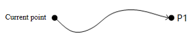
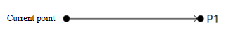
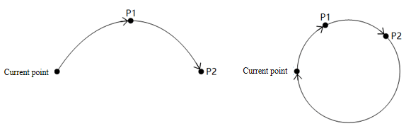
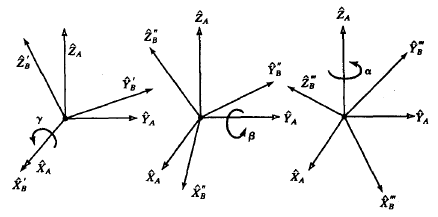
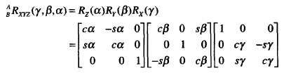
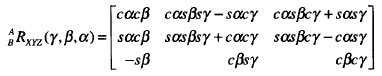
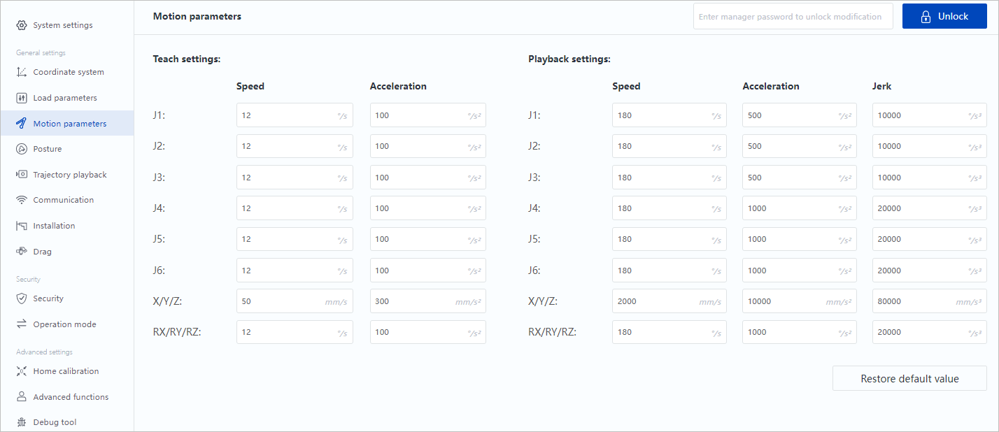
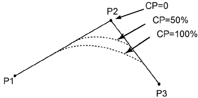
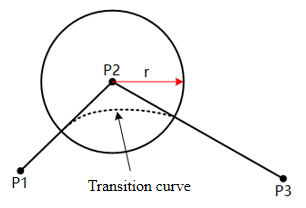
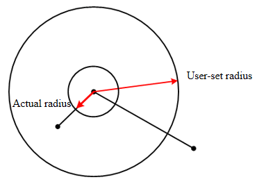

General description
Motion mode
The motion modes of the robot include the following types.
Joint motion
The robot arm plans the motion of each joint according to the difference between the current joint angle and the joint angle of the target point, so that each joint completes the motion at the same time. The joint motion does not constrain the trajectory of TCP (Tool Center Point), which is generally not a straight line.

As the joint motion is not limited by the singularity position (see the corresponding hardware guide for details), if there is no requirement for the motion trajectory, or the target point is near the singularity position, it is recommended to use joint motion.
Linear motion
The robot arm plans the motion trajectory according to the current posture and the posture of the target point, so that the TCP motion trajectory is a straight line, and the posture of the end changes uniformly during the movement.

When the trajectory may pass through the singularity position, an error will be reported when the linear motion command is delivered to the robot arm. It is recommended to re-plan the point or use joint motion near the singularity position.
Arc motion
The robot arm determines an arc or a circle through three non-collinear points: the current position, P1 and P2. The posture of the end of the robot arm during the movement is calculated by the posture interpolation of the current point and P2, and the posture of P1 is not included in the operation (i.e, the posture of the robot arm when it reaches P1 during the movement may be different from the taught posture).

When the trajectory may pass through the singularity position, an error will be reported when the arc motion command is delivered to the robot arm. It is recommended to re-plan the point or use joint motion near the singularity position.
Point parameters
All point parameters in this document support three expressions unless otherwise specified.
Joint variable: describe the target point using the angle of each joint (j1~ j6) of the robot arm.
When the joint variable is used as a linear or arc motion parameter, the system will convert it into a posture variable through a positive solution, but the algorithm will ensure that the joint angle of the robot arm when it reaches the target point will be consistent with the set value.
{joint = {j1, j2, j3, j4, j5, j6} }
Posture variable: describe the spatial position of the target point in the user coordinate system using Cartesian coordinates (x, y, z), and describe the rotation angle of the tool coordinate system relative to the user coordinate system when the TCP (Tool Center Point) reaches a specified point using Euler angles (rx，ry，rz).
When the posture variable is used as a point parameter of the joint motion, the system will convert it into a joint variable (the solution closest to the current joint angle of the robot arm) through the inverse solution.
{pose = {x, y, z, rx, ry, rz} }
The rotation order when calculating the Euler angle of Dobot robot is X->Y->Z, and each axis rotates around a fixed axis (user coordinate system), as shown below (rx=γ, ry=β, rz=α).

Once the rotation order is determined, the rotation matrix (cα is short for cosα, sα is short for sin α, and so on)

can be derived as the equation

The posture of the end of robot arm can be calculated through the equation.
- Taught point: the points obtained through hand-guiding using the software are saved as constants in the following format.
--[[
name: name of taught point
joint: joint coordinates of taught point
tool: tool coordinate system index in hand guiding
user: user coordinate system index in hand guiding
pose: posture variable value of taught point
--]]
{
name = "name",
joint = {j1, j2, j3, j4, j5, j6},
tool = index,
user = index,
pose = {x, y, z, rx, ry, rz}
}
Coordinate system parameters
The "user" and "tool" in the optional parameters are used to specify the user and tool coordinate systems for the target point. Now the coordinate system can be specified only through the index, and the corresponding coordinate system needs to be added in the software first.
Priority of selecting the coordinate system:
- When a coordinate system is specified in the optional parameters, the specified coordinate system is used. If the target point is a taught point, the posture coordinates of the point will be converted into the value under the specified coordinate system..
- When the coordinate system is not specified in the optional parameters, if the point parameter is a teaching point, the coordinate system index that comes with the teaching point is used.
- When the coordinate system is not specified in the optional parameters, if the target point is a joint variable or a posture variable, the global coordinate system set in the motion parameters (See User and Tool commands for details. The default coordinate system is 0 when no command is called).
- The default global coordinate system is set to 0 when you start running the script, regardless of the value set in the Jog panel before running the script.
- When the joint motion command (MovJ/MovJIO/RelMovJTool/RelMovJUser) is called, if the point is a joint variable, the coordinate system parameter is invalid.
Speed parameters
Relative speed rate
The "a" and "v" in the optional parameters are used to specify the acceleration and velocity rate when the robot arm executes motion commands.
Robot actual motion speed = maximum speed x global speed x command rate
Robot actual acceleration = maximum acceleration x command rate
The maximum acceleration/velocity is limited by Playback settings, which can be viewed and modified in "Motion parameters" page in the software.

The global speed rate can be set through the control software (upper right corner of the figure above) or the SpeedFactor command.
The command rate is carried by the optional parameters of the motion commands. When the acceleration/velocity rate is not specified through the optional parameters, the value set in the motion parameters is used by default (see VelJ, AccJ, VelL, AccL commands for details, and the default value is 100 when the command setting is not called). Example:
AccJ(50) -- Set the default acceleration of joint motion to 50%
VelJ(60) -- Set the default speed of joint motion to 60%
AccL(70) -- Set the default acceleration of linear motion to 70%
VelL(80) -- Set the default speed of linear motion to 80%
-- global speed rate: 20%
MovJ(P1) -- Move to P1 at the acceleration of (maximum joint acceleration x 50%) and speed of (maximum joint speed x 20% x 60%) through the joint motion
MovJ(P2,{a = 30, v = 80}) -- Move to P1 at the acceleration of (maximum joint acceleration x 30%) and speed of (maximum joint speed x 20% x 80%) through the joint motion
MovL(P1) -- Moves to P1 at the acceleration of (maximum Cartesian acceleration x 70%) and speed of (maximum Cartesian speed x 20% x 80%) in the linear mode
MovL(P1,{a = 40, v = 90}) -- Moves to P1 at the acceleration of (maximum Cartesian acceleration x 40%) and speed of (maximum Cartesian speed x 20% x 90%) in the linear mode
Absolute speed
The "speed" in the optional parameter of linear and arc motion commands is used to specify the target speed when the robot executes the command.
The target speed is not affected by the global speed, but limited by the maximum speed in Playback settings (or the maximum speed after reduction if the robot is in reduced mode), i.e. if the target speed set by the speed parameter is greater than the maximum speed in Playback settings, then the maximum speed takes precedence.
Example:
MovL(P1,{speed = 1000}) -- Move to P1 in the linear mode at a absolute speed of 1000
If the speed set in MovL is 1000 (less than the maximum speed of 2000 in Playback settings), the robot will move at a target speed of 1000 mm/s, which is independent of the global speed at this point. However, if the robot is in reduced mode (assuming a reduction rate of 10%), the maximum speed turns to 200 (less than 1000), and the robot will move at a target speed of 200 mm/s.
The "speed" and "v" cannot be set at the same time.
Continuous path parameters
When the robot arm moves through multiple points continuously, it can pass through the intermediate point through a smooth transition so the robot arm will not turn too bluntly.
The "cp" or "r" in the optional parameters are used to specify the continuous path rate (cp) or continuous path radius (r) between the current and the next motion commands. The two parameters are mutually exclusive. If both exist, r takes precedence.
When setting the continuous path rate, the system will automatically calculate the curvature of the transition curve. The larger the CP value, the smoother the curve, as shown in the figure below. The CP transition curve will be affected by the motion speed/acceleration. Even if the point and CP values are the same, the curvature of the transition curve will vary due to different motion speed/acceleration.

When setting the continuous path radius, the system will calculate the transition curve according to the specified radius with the transition point as the center of the circle. The R transition curve is not affected by the motion speed/acceleration, but determined by the point and continuous path radius.

If the continuous path radius is set too large (more than the distance between the start/end point and the intermediate point), the system will automatically calculate the transition curve using half of the shorter distance between the start/end point and the transition point as the continuous path radius.

When the continuous path rate and radius are not specified in the optional parameters, the continuous path rate set in the motion parameter is used by default (See CP command for details. The default value is 0 when no command is called).
If you want to output the IO signal when the robot arm reaches exactly the target point, please set the continuous parameter of last command to 0.
IO signal
The ON and OFF variables are predefined inside the system to indicate whether there is a signal.
ON = 1: there is a signal
OFF = 0: there is no signal
ON | OFF in the parameter means that the parameter value is ON or OFF. You can also use 1 or 0 as input.